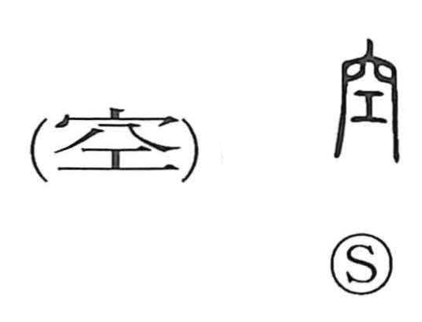

空

Kun: sora, aku, akeru, kara, munashii | On: kuu
empty ・ sky ・ space ・ to empty
Explanation
A phono‑semantic character: the lower element serves as the sound marker, while the upper component is 穴, a depiction of a hole arched in a gentle, bow‑like curve reminiscent of a rainbow. In its earliest sense, 空 meant simply “hole.” From the idea that nothing occupies a cavity, it naturally broadened to mean “empty,” “vacant,” and “to empty,” as well as “space” and “distance.” Viewing the firmament as the upper reach of a vastly expanded, dome‑shaped hollow, the character came to denote the sky (sora) as well.